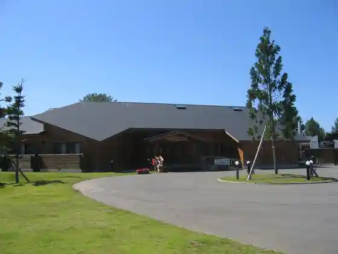
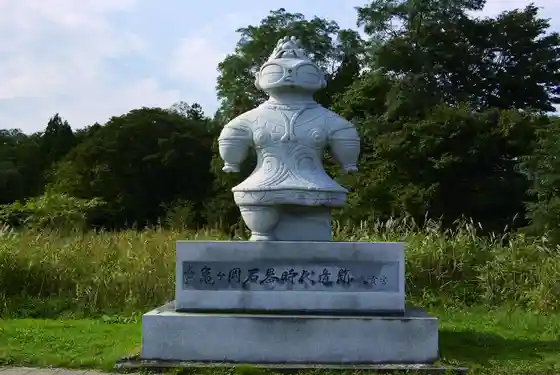

Kozan Inari Shrine
Tsugaru, Aomori · 0173-56-2015 · Official / source link
Tsugaru Chikyu Village
Tsugaru, Aomori · 0173-26-2855 · Official / source link

Kamegaoka Sekkijidai Iseki
Tsugaru, Aomori · 0173-49-1194 · Official / source link

Bense Marsh
Tsugaru, Aomori · 0173-42-2111 · Official / source link
Roadside Station Morita (Asutoppu)
Tsugaru, Aomori · 0173-26-4488 · Official / source link
Azumashi no Sato Onsen Ii Yu Dana
Tsugaru, Aomori · 0173-42-3232 · Official / source link
Nihonsaiko no Ringo no Ki
Tsugaru, Aomori · 0173-42-2111 · Official / source link
Ta Koya no Kaizuka
Tsugaru, Aomori · 0173-49-1194 · Official / source link
Deki Shima Beach
Tsugaru, Aomori · 0173-42-2111 · Official / source link
Tsugaru Jomon Jukyo Tenji Museum (Karuko)
Tsugaru, Aomori · 0173-42-6490 · Official / source link
Nishi no Koyasan Hironori Tera
Tsugaru, Aomori · 0173-26-2320 · Official / source link
Taira Taki Numa Park
Tsugaru, Aomori · 0173-42-2111 · Official / source link
Mokuzo Kamegaoka Koko Shiryoshitsu (Jomon Kannai)
Tsugaru, Aomori · 0173-45-3450 · Official / source link
Magua Beach
Tsugaru, Aomori · 0173-42-2111 · Official / source link
Tsugaru Morita Folk History Museum
Tsugaru, Aomori · 0173-26-2201 · Official / source link
Ippon Tamo
Tsugaru, Aomori · 0173-42-2111 · Official / source link